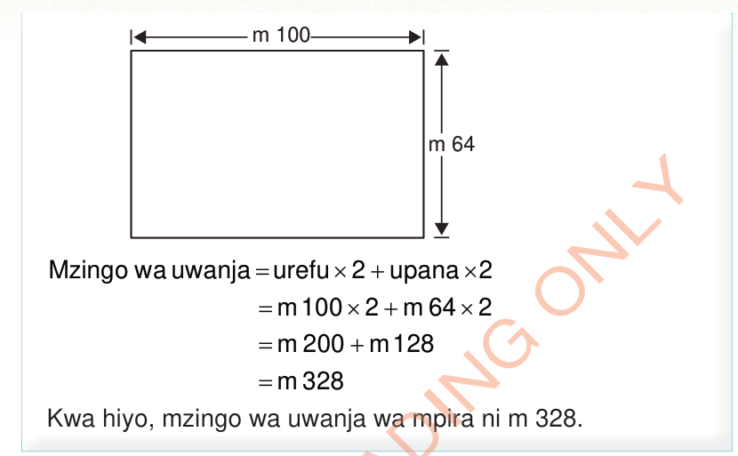
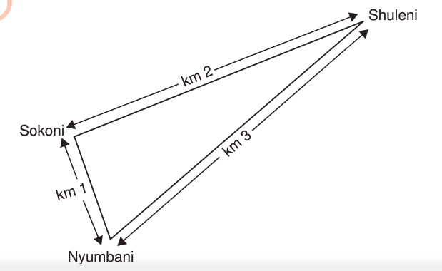

Mzingo wa uwanja = urefu × 2 + upana × 2
= m 100 × 2 + m 64 × 2
= m 200 + m 128
= m 328
Kwa hiyo, mzingo wa uwanja wa mpira ni m 328.
HISABATI DRS 4 PB 2024.indd 87
18/09/2025 15:51:49

Mfano wa tatu
Mwanafunzi aliendesha baiskeli umbali wa km 3 kutoka nyumbani hadi shuleni.
Baada ya masomo alienda sokoni kununua matunda umbali wa km 2 kutoka shuleni.
Baada ya kununua matunda alipita njia ya mkato ya km 1 kufika nyumbani kama inavyoonesha katika mchoro ufuatao.
Je, mwanafunzi huyo aliendesha baiskeli umbali gani?
